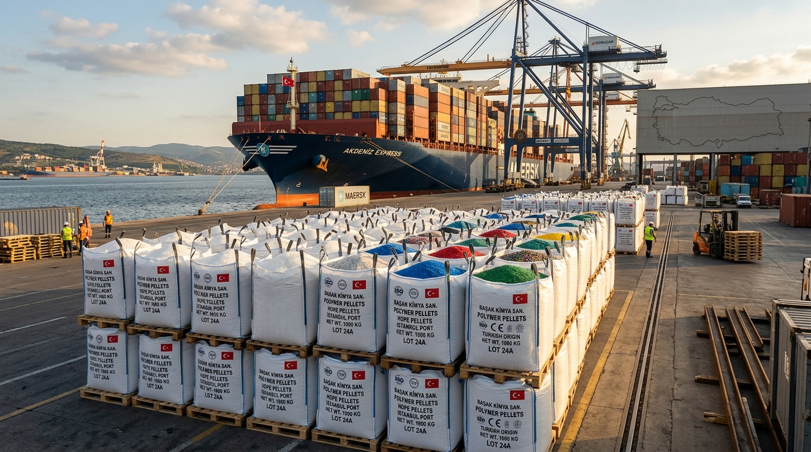

Türkiye'ye kalite kontrolleri yapılmış, rekabetçi fiyatlandırma ve ihracat desteğiyle LDPE, HDPE, PP, PET, PVC ve diğer plastik hammaddelerine güvenilir erişim sağlayın. Konteyner yüklemelerini uzaktan canlı olarak veya fiziksel olarak denetleyin.
Bize polimer türünü, kalitesini (grade), miktarını ve varış limanını belirtin. Ekibimiz güncel stok durumunu kontrol edip size en iyi seçeneği sunacaktır.

Doğru kalitede, miktarda ve fiyatta polimer bulmak zorlayıcı olabilir. Polymer in Stock, küresel tedarikçi ağı sayesinde üreticilerin ve tüccarların plastik hammaddelerine ulaşmasını sağlar; ürün denetimi, şeffaf tedarik ve sevkiyat desteği sunar.
Köklü uluslararası tedarikçi ilişkilerimiz sayesinde geniş yelpazedeki polimer hammaddelerine istikrarlı bir şekilde ulaşın.
Satın alımınızı tamamlamadan önce ürün bilgilerini ve spesifikasyonlarını inceleyin, fiziksel veya canlı görüntülü denetim organize edin.
Tedarik ve kalite kontrolden yükleme, deniz nakliyesi, lojistik ve gümrük belgelerine kadar tüm süreci ekibimiz sizin için yönetir.
Üretim gereksinimlerinize uygun malzeme kategorisini seçin ve güncel kaliteler, miktarlar ve fiyatlar için ekibimizle iletişime geçin.
Tutarlılık, yüksek saflık oranı ve güvenilir üretim gerektiren hassas uygulamalar için yüksek kaliteli orijinal hammaddeler.
Yalnızca birinci sınıf hammaddelere bağımlı kalmadan alternatif, ekonomik çözümler arayan üreticiler için maliyet etkin polimer seçenekleri.
Üretim süreçlerinde uygun fiyatlı ve çevreye duyarlı ikincil hammaddeler kullanmak isteyen üreticiler için geri dönüştürülmüş granül ve çapaklar.
Plastik geri dönüşüm tesisleri ve kırma makinesine sahip işletmeler için ileri işleme süreçlerine uygun geniş yelpazede plastik atıklar ve hurda hammaddeler.
Envanterimizde bulunan güncel ürün kalitelerini inceleyin. Ürün listesini kaydırın ve Türkiye için toplu alım fiyatlarını hemen sorgulayın.
13 yılı aşkın deneyimimiz, 32 küresel tedarikçi ortaklığımız ve 12'den fazla ülkeye yaptığımız ihracatla Polymer in Stock, uluslararası pazarlarda plastik hammadde tedarik eden işletmeleri destekler.
Kaliteyi bizzat yerinde doğrulamak için sevkiyat öncesinde malzemeyi fiziksel olarak inceleyin.
Konteyner yükleme sürecini görüntülü bağlantı aracılığıyla uzaktan anlık olarak takip edin.
Her sevkiyat, satın alırken üzerinde anlaştığımız teknik özelliklere göre denetlenir.
Tüm liman nakliye, lojistik ve gümrük belgelendirme süreçleri gümrük uzmanlarımızca yürütülür.
Uluslararası polimer tedariğini basitleştiriyoruz. İşte Türkiye limanlarına güvenli teslimat ve yüksek kaliteyi garanti eden adım adım sürecimiz.
Bize polimer türünü, kalitesini (grade), miktarını ve kullanım alanını belirtin.
Ürün ekibimiz mevcut stokları kontrol eder; ürün detaylarını, fotoğrafları ve fiyatlandırmayı paylaşır.
Mümkün olan durumlarda fiziksel muayene organize edin veya yükleme sırasında görüntülü denetim kullanın.
Malzeme onayınızı aldıktan sonra yükleme, gümrük, nakliye ve ihracat evraklarını koordine ederiz.
Kalite kontrol, denetim seçenekleri, ödeme koşulları ve Türkiye teslimatları hakkında net ve doğrudan yanıtlar.
İhtiyaçlarınızı bize iletin. Güncel stoklarımızı kontrol edip üretim süreçleriniz için en uygun malzemeyi bulmanıza yardımcı olalım.
Uzmanlarımız talebiniz doğrultusunda 24 saat içinde detaylı durum bilgisiyle geri dönüş sağlar.
Yükleme yapılmadan önce bağımsız gözetim kuruluşları veya görüntülü aramalarla kontrol sağlayın.
Türkiye'nin önemli tüm limanlarına (Mersin, İstanbul, İzmir) direkt konteyner sevkiyatları.